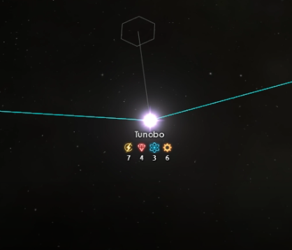
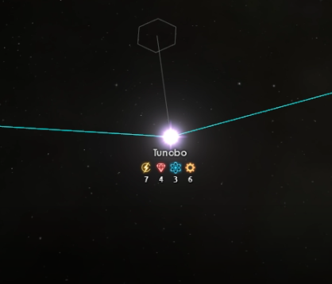

Add/Remove System
 
This is used to show how valuable a system is relative to your current research. The change you will get by aquiring or removing the system will be shown in the results section under research rates. The values will be displayed in red (if it hurts your progress) or green (if it helps).

This is used to show how valuable a system is relative to your current research. The change you will get by aquiring or removing the system will be shown in the results section under research rates. The values will be displayed in red (if it hurts your progress) or green (if it helps).